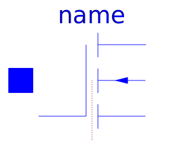
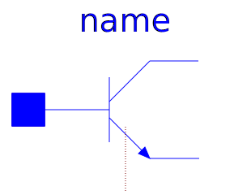
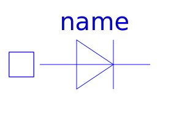
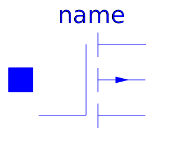
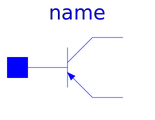
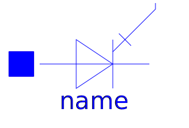

This package contains semiconductor devices:
Most of the semiconductor devices contain a conditional heat port, which is not active by default. If it is active the loss power is calculated to be used in a thermal net. The heating variants of the semiconductor devices are provided to use the thermal port temperature in the electric calculation. That means that for a true thermal electric interaction the heating device models have to be used.
| Name | Description |
|---|---|
| Simple diode | |
| Improved diode model | |
| Zener diode with 3 working areas | |
| PMOS | Simple MOS Transistor |
|  NMOS | Simple MOS Transistor |
|  NPN | Simple BJT according to Ebers-Moll |
| Simple BJT according to Ebers-Moll | |
|  HeatingDiode | Simple diode with heating port |
| Simple MOS Transistor with heating port | |
|  HeatingPMOS | Simple PMOS Transistor with heating port |
| Simple NPN BJT according to Ebers-Moll with heating port | |
|  HeatingPNP | Simple PNP BJT according to Ebers-Moll with heating port |
|  Thyristor | Simple Thyristor Model |
| Simple triac, based on Semiconductors.Thyristor model |